11812804 董正
1 Introduction
The documentation of class matrix is hosted on my GitHub.
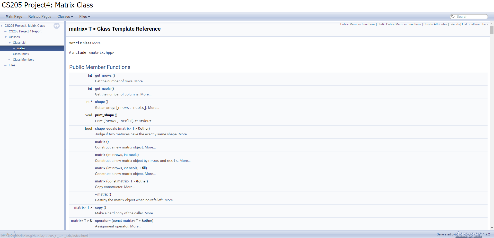
Alternatively, view this report online here.
1.1 Project Description
This project is to design a class for matrices.
- The class should contain the data of a matrix and related information.
- The class support different data types.
- Do not use memory hard copy if a matrix object is assigned to another.
- Implement some frequently used operators.
- Implement region of interest (ROI) to avoid memory hard copy.
- Test the program on X86 and Arm platforms, and describe the differences.
1.2 Development Environment
- x86_64
- Windows 10 Home China x86_64
- Kernel version
10.0.19042
Intel i5-9300H (8) @ 2.400GHzg++.exe (tdm64-1) 10.3.0- C++ standard:
c++11
- Arm64
macOS 12.0.1 21A559 arm64- Darwin Kernel Version
21.1.0
- Apple M1 Pro (10-cores)
Apple clang version 13.0.0 (clang-1300.0.29.3)- C++ standard:
c++11
2 Design and Implementation
Header files and macros used in this section:
{c++}
#include <fstream>
#include <iostream>
#define STRASSEN_LOWER_BOUND 128
2.1 Fields Of Matrix Class
To support different data types, I used template class.
matrix class has three basic fields:
{c++}
template <typename T>
class matrix {
int nrows;
int ncols;
T* data;
...
}
data is a 1D dynamic array containing all the elements of the matrix.
To avoid memory copy, I added a field named ref_count:
See details in section 2.2 below.
To support ROI, I used another pointer:
{c++}
const matrix<T>* parent_matrix;
2.2 Constructor: Avoid Mem Copy
As the project required, it is forbidden to use hard copy if a matrix object is assigned to another.
If use soft copy directly, there will be an error when freeing data array:
{c++}
matrix<int> m2 = m1; // will set m2.data = m1.data
Therefore, when destructing m1 and m2, since their data field is pointing to the same address, the array will be freed twice.
A solution is to override destructor and do not free data. But it will cause memory leak.
To solve this, I referenced cv::Mat and added a field int* ref_count. It serves like a global integer for each allocated array.
The idea is described in the following picture:
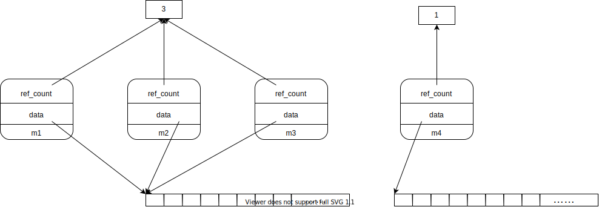
When destructing a matrix, just decrease the integer that ref_count points to.
Example: delete m3, m4.
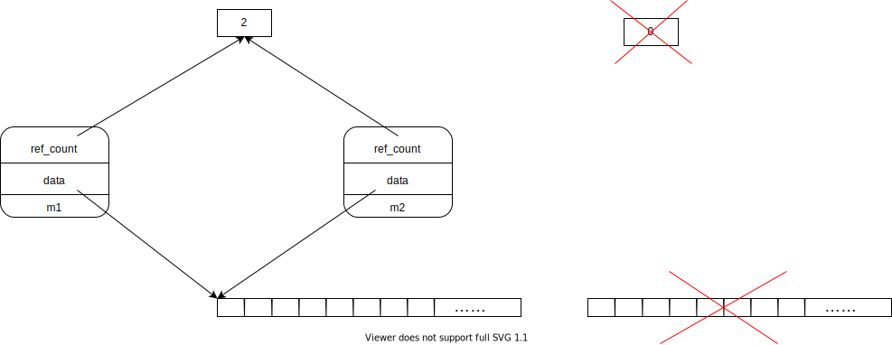
When ref_count decreases to 0, the array will be finally freed.
Therefore, the destructor is:
{c++}
template <typename T>
inline matrix<T>::~matrix() { // version 1
*(this->ref_count) -= 1;
if (*(this->ref_count) == 0 && this->data != nullptr) {
delete[] this->data;
delete this->ref_count;
}
}
And for copy constructor, just do soft copy, and increase ref_count by 1.
{c++}
template <typename T>
inline matrix<T>::matrix(const matrix<T>& other) {
this->nrows = other.nrows;
this->ncols = other.ncols;
this->parent_matrix = other.parent_matrix;
this->data = other.data;
this->ref_count = other.ref_count;
*(this->ref_count) += 1;
}
For assignment operator, be sure to free data if it is the last reference of the array.
{c++}
template <typename T>
inline matrix<T>& matrix<T>::operator=(const matrix<T>& other) {
this->nrows = other.nrows;
this->ncols = other.ncols;
this->parent_matrix = other.parent_matrix;
*(this->ref_count) -= 1;
if (*(this->ref_count) == 0 && this->data != nullptr) {
delete this->ref_count;
delete[] this->data;
}
this->data = other.data;
this->ref_count = other.ref_count;
*(this->ref_count) += 1;
return *this;
}
2.3 ROI For Submatrix
In my understanding, ROI is a concept of submatrix that shares data with its parent matrix.
To use ROI correctly, we need to know the shape of its parent matrix's size. Because when we get the [i][j] position element, we need to know the columns of its parent matrix in order to translate i and j to the correct position in the whole array.
i.e. sub[i][j]==sub.data[i * parent.ncols + j].
So the design is very clear. Use a parent_matrix pointer to store its parent:
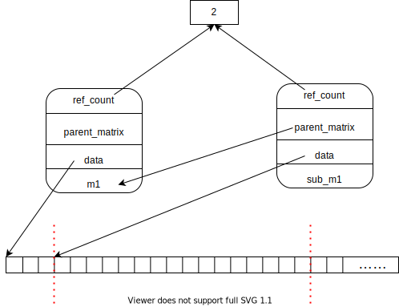
However, here comes two problems with this design.
2.3.1 Multi-level Submatrix
The first is, multi-level submatrix.
One choice is to concatenate them like a linked-list:
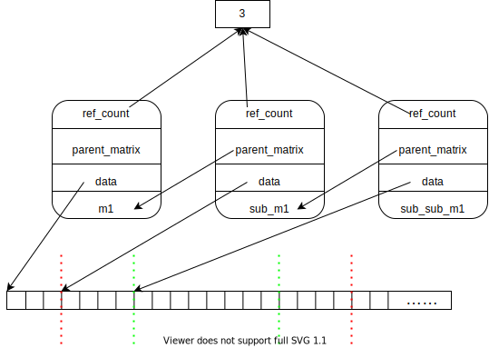
It is unacceptable because sub_sub_m1[i][j]==sub_sub_m1.data[i * sub_sub_m1->parent_matrix->ncols + j]==sub_sub_m1.data[i * sub_m1.ncols + j] and it is wrong.
Therefore, we must let all the submatrices point to the root matrix.
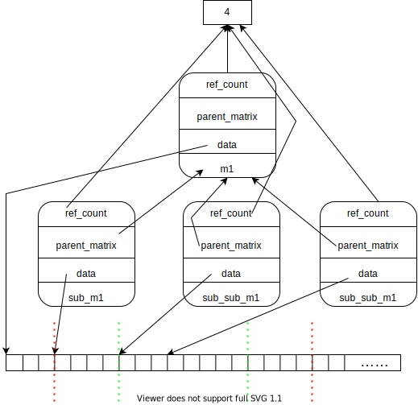
Thus, the submatrix construction function is:
{c++}
template <typename T>
matrix<T> matrix<T>::submatrix_ROI(int row_start, int row_end, int col_start, int col_end) {
matrix<T> res;
res.nrows = row_end - row_start;
res.ncols = col_end - col_start;
if (this->parent_matrix == nullptr) {
res.data = this->data + row_start * this->ncols + col_start;
res.parent_matrix = this;
} else {
res.data = this->data + row_start * this->parent_matrix->ncols + col_start;
res.parent_matrix = this->parent_matrix;
}
res.ref_count = this->ref_count;
*(res.ref_count) += 1;
return res;
}
2.3.2 Submatrix Deletion
The second problem is the case that delete parent matrix before delete all submatrices.
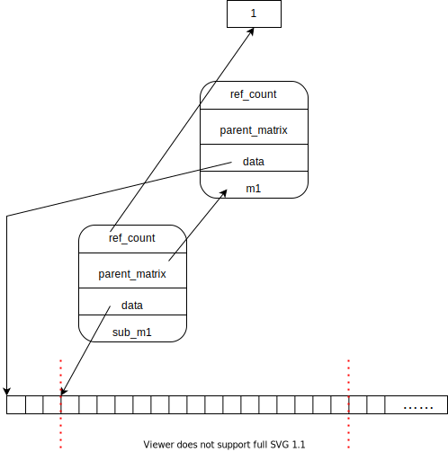
When delete sub_m1, we should delete m1.data, not sub_m1.data because it is not the head address.
Therefore, ~matrix() should be modified:
{c++}
template <typename T>
inline matrix<T>::~matrix() {
*(this->ref_count) -= 1;
if (*(this->ref_count) == 0 && this->data != nullptr) {
if (this->parent_matrix == nullptr) {
delete[] this->data;
} else { // it is a submatrix
delete[] this->parent_matrix->data;
}
delete this->ref_count;
}
}
2.3.3 ROI Adjustment
Change the address of data pointer.
{c++}
template <typename T>
void matrix<T>::adjust_ROI(int row_start, int row_end, int col_start, int col_end) {
if (this->parent_matrix == nullptr) {
cout << "ROI adjustment error: not a submatrix." << endl;
exit(EXIT_FAILURE);
}
if (row_start < 0 || row_end > this->parent_matrix->nrows || col_start < 0 || col_end > this->parent_matrix->ncols) {
cout << "ROI adjustment error: array index out of bound." << endl;
exit(EXIT_FAILURE);
}
this->nrows = row_end - row_start;
this->ncols = col_end - col_start;
this->data = this->parent_matrix->data + row_start * this->parent_matrix->ncols + col_start;
}
2.4 Matrix Operations
2.4.1 Index Operator
Since the data is stored in a 1d array, we need an API to access elements like a 2d array. Be careful of submatrices.
{c++}
template <typename T>
inline T* matrix<T>::operator[](int i) {
if (i > this->nrows - 1) {
cout << "Index error: array index out of bound." << endl;
exit(EXIT_FAILURE);
}
if (this->parent_matrix != nullptr) {
return this->data + i * this->parent_matrix->ncols;
}
return this->data + i * this->ncols;
}
template <typename T>
inline T& matrix<T>::operator()(int i, int j) {
if (i > this->nrows - 1 || j > this->ncols - 1) {
cout << "Index error: array index out of bound." << endl;
exit(EXIT_FAILURE);
}
if (this->parent_matrix != nullptr) {
return this->data[i * this->parent_matrix->ncols + j];
}
return this->data[i * this->ncols + j];
}
2.4.2 Other Functions
{c++}
bool operator==(matrix<T>& other);
bool operator!=(matrix<T>& other);
matrix<T> operator+(matrix<T>& other);
matrix<T> operator-(matrix<T>& other);
matrix<T> operator*(matrix<T>& other);
matrix<T> operator*(T coef);
template <typename U> friend matrix<U> operator*(int coef, matrix<U>& m);
matrix<T> operator^(int expo); // fast power algo
matrix<T>& operator*=(matrix<T>& other);
matrix<T>& operator*=(T coef);
matrix<T>& operator+=(matrix<T>& other);
matrix<T>& operator-=(matrix<T>& other);
matrix<T> multiply_elements(matrix<T>& other);
static matrix<T> merge_matrix(matrix<T>& C11, matrix<T>& C12, matrix<T>& C21, matrix<T>& C22);
int get_nrows();
int get_ncols();
int* shape();
void print_shape();
bool shape_equals(matrix<T>& other);
matrix();
matrix(int nrows, int ncols);
matrix(int nrows, int ncols, T fill);
matrix<T> copy(); // hard copy
static matrix<T> create_row_vec(int ncols, T fill);
static matrix<T> create_col_vec(int nrows, T fill);
static matrix<T> create_diagonal(int nrows, T fill);
static matrix<T> read_matrix(const char* file_name);
void print(const char* file_name);
void print();
Check their description and usage in the document.
3 x86 and Arm
3.1 Metrics: CPU Cycles
Speaking to differences between x86 and Arm, the first thought in my head is instructions. x86 is a CISC instruction set and Arm is a RISC instruction set. So to compare them, the most obvious metrics is the number of instructions executed. We expect that Arm will execute much more instructions than x86 on the same program.
However, counting the number of instructions need CPU and operating system's API support. Inside most CPU there is a PMU (Performance Monitoring Unit) that counts information on machine-level. Luckily Linux has a tool perf to access PMU.
The command is perf stat <program>. However, I tried it on three different Linux computers (my PC, my lab's server, Huawei's server) and it just did not work.
[dongzheng@ecs001-0021-0032 ~]$ perf stat -v ls
Using CPUID 0x00000000480fd010
Warning:
cycles event is not supported by the kernel.
Warning:
instructions event is not supported by the kernel.
Warning:
branches event is not supported by the kernel.
Warning:
branch-misses event is not supported by the kernel.
htop-2.2.0-8.fc32.aarch64.rpm neofetch-7.1.0-1.5.noarch.rpm openEuler_aarch64.repo test.cpp
task-clock: 740580 740580 740580
context-switches: 0 740580 740580
cpu-migrations: 0 740580 740580
page-faults: 61 740580 740580
failed to read counter cycles
failed to read counter instructions
failed to read counter branches
failed to read counter branch-misses
Performance counter stats for 'ls':
0.74 msec task-clock # 0.797 CPUs utilized
0 context-switches # 0.000 K/sec
0 cpu-migrations # 0.000 K/sec
61 page-faults # 0.082 M/sec
<not supported> cycles
<not supported> instructions
<not supported> branches
<not supported> branch-misses
0.000929716 seconds time elapsed
0.000965000 seconds user
0.000000000 seconds sys
It all showed <not supported> on these three different Linux systems, which is very weird. Then I spent all day finding solutions on foreign websites, and I failed. All the configs are right and god knows why it doesn't work.
[dongzheng@ecs001-0021-0032 ~]$ cat /usr/src/kernels/4.19.90-2003.4.0.0036.oe1.aarch64/.config | grep CONFIG_HW_PERF_EVENTS
CONFIG_HW_PERF_EVENTS=y
[dongzheng@ecs001-0021-0032 ~]$ cat /usr/src/kernels/4.19.90-2003.4.0.0036.oe1.aarch64/.config | grep CONFIG_PERF_EVENTS
CONFIG_PERF_EVENTS=y
Then I started to read Intel and Arm's PMU manual to get information about perf events.
In Intel(R) 64 and IA-32 Architectures Software Developer's Manual Volume 3B, section 19.1, there is a table:
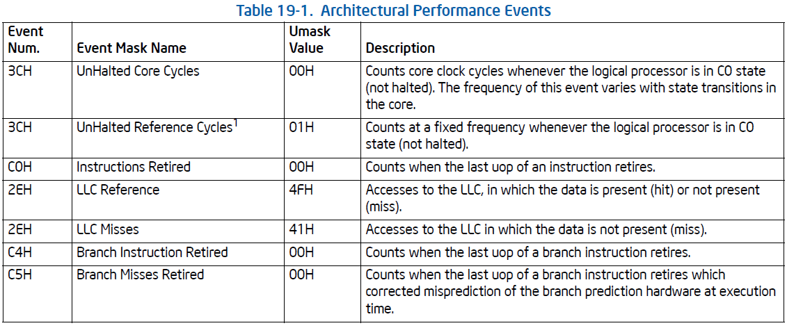
To get these counters, use perf stat -e r<umask><event#> <program>. And I found the cycles counter (0x003c) work.
On my lab's server (Intel Xeon Gold 6240)
undergrad1@s001:~/dz$ perf stat -e r003c ls
LightGBM.tar.gz log supersegment
Performance counter stats for 'ls':
1,742,296 r003c
0.000919820 seconds time elapsed
So I found a way to count CPU cycles.
And for Arm's CPU, look up its ISA first.
On Arm server:
[dongzheng@ecs001-0021-0032 ~]$ cat /proc/cpuinfo
processor : 0
BogoMIPS : 200.00
Features : fp asimd evtstrm aes pmull sha1 sha2 crc32 atomics fphp asimdhp cpuid asimdrdm jscvt fcma dcpop asimddp asimdfhm
CPU implementer : 0x48
CPU architecture: 8
CPU variant : 0x1
CPU part : 0xd01
CPU revision : 0
...
Referring to MIDR register. The CPU of this server is HiSilicon's Kunpeng-920 r1p0, ARMv8.
Then find an ARMv8 architecture CPU on Arm's document, eg. Cortex-A53. In PMU events section, there is another table:
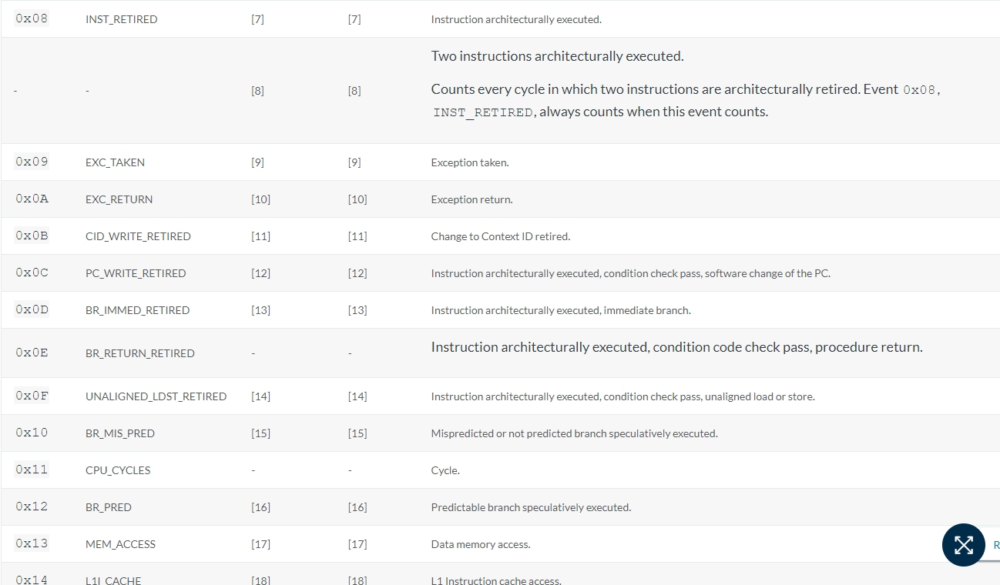
The event number of CPU cycles is 0x11.
Therefore, to count CPU cycles, use perf stat -e r11 <program>, and it did work.
[dongzheng@ecs001-0021-0032 ~]$ perf stat -v -e r11 ls
Using CPUID 0x00000000480fd010
htop-2.2.0-8.fc32.aarch64.rpm neofetch-7.1.0-1.5.noarch.rpm openEuler_aarch64.repo test.cpp
r11: 2147483647 728390 728390
Performance counter stats for 'ls':
2,147,483,647 r11
0.000918686 seconds time elapsed
0.000957000 seconds user
0.000000000 seconds sys
Finally, I found a way to compare CPU cycles.
3.2 Test Platform
x86_64:
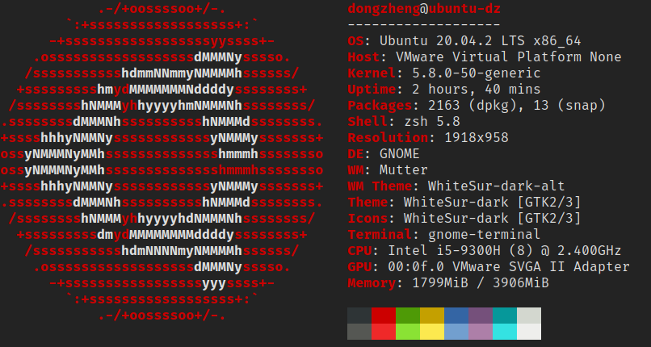
Arm64:
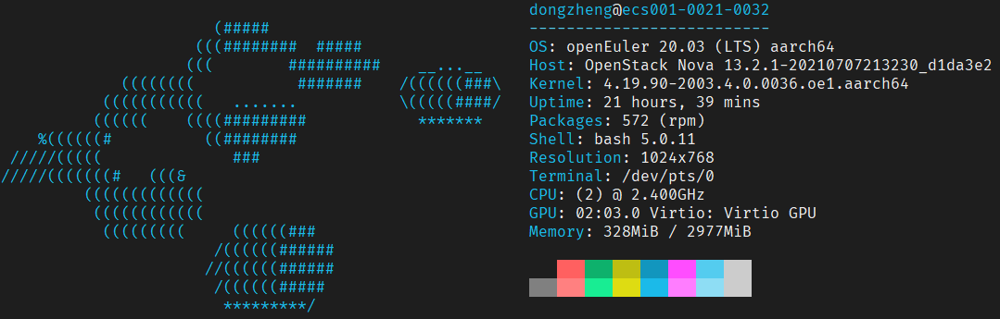
3.3 Dataset & Test Cases
Use the same dataset as project3, the dimension of matrices are 32, 64, 128, 256, 512, 1024 and 2048.
The test program is still matrix multiplication, compiled with set(CMAKE_BUILD_TYPE "Release") to get maximum compiler optimization.
For each dimension, run it for 10 times and calculate average to improve accuracy.
The command (on x86) I use is:
perf stat -e r003c -x, -r 10 ../matmul.out ../data/mat-A-{dim}.txt ../data/mat-B-{dim}.txt ./out/out-{dim}.txt 2>>res_x86.csv
3.4 Comparison On Matrix Multiplication
Here is the result:
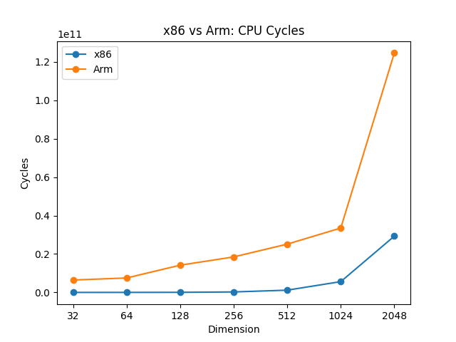
Raw data:
| Dim | x86 | Arm |
| 32 | 5,437,450 | 6,442,450,941 |
| 64 | 15,888,681 | 7,516,192,764 |
| 128 | 54,962,123 | 14,173,392,070 |
| 256 | 248,184,298 | 18,468,359,364 |
| 512 | 1,177,740,654 | 25,125,558,670 |
| 1024 | 5,620,732,185 | 33,500,744,893 |
| 2048 | 29,277,503,823 | 124,554,051,526 |
From the result, we can see that Arm used much more CPU cycles, about $10^1$ larger than x86's, as we expected.
From my test results, on same programs, on average, Arm uses 6.3126 times of x86's CPU cycles (sum of arm / sum of x86). Which means Arm is short for complex programs.
3.5 References
How can I get the number of instructions executed by a program?
why does perf stat show "stalled-cycles-backend" as <not supported>?
Why can't I find hardware cache event in my perf list?
Perf Wiki Tutorial
Intel(R) 64 and IA-32 Architectures Software Developer's Manual Volume 3B: System Programming Guide
Using the perf utility on Arm
PERF tutorial: Counting hardware performance events
Arm CPU Vendor 及 Part ID 映射关系
Arm Cortex-A53 MPCore Processor Technical Reference Manual
4 Conclusion
In this project, I learnt to design a complete class in C++, especially overriding the operators.
I learned how to manage memory when using soft copy. And a new concept ROI and its manipulations.
In addition, I learned how to use doxygen to generate docs for C++ source codes.
And I compared the performance of x86 and Arm ISA. Thus, I had a better understanding on different architectures. And I need an OS engineer to fix these perf events and a doctor to fix me.
 1.9.2
1.9.2